A dungeon built like a toy diorama: rooms cut open and seen from above at the Diablo angle, each room lit in its own colour, and everything in it made from pixel-art sprites pushed out into 3D. The plan is one room first. It's a carnival crypt, lit magenta, mixing two folders from my reference library: carnival maximalism and gothic romanticism.
The lighting worked, but the sprites didn't. They came from the cheapest generator style at 64 pixels and were squashed down to 32. They had shading painted in, which fought the real lights. And they were round things drawn from the front, so the barrel turned into a flat card with a bump in it. I threw the set away and started again, one stage at a time.

All four styles were useful for different jobs, so each one gets a role: characters, small props, flat wall pieces and big furniture. What holds them together is a shared twelve-colour palette that every sprite is forced into.

A sprite becomes a stack of voxels. A coffin and a candle can't be pushed out the same way, so there are four rules for it.

Slab pushes every pixel back the same distance. It suits upright things with a flat front, like the coffin. Lathe spins the sprite's outline around a vertical axis, for round things like candles and urns. Bulge makes pixels deeper the further they are from the edge, so faces puff out like pillows. Relief is bulge with a flat back, and the back can take a sprite of its own. Boxes are folded from an unfolded net, further down.

The relief mask with the ribbon on its back looked like a little creature, so the masks became the monsters of this room. Two of them float around for now, at the top of this page.
The first prop made for the room. Three drafts, each a single candle on a tall 32 by 64 canvas, spun with the lathe. All three stayed.

The cluster cost nothing to make. Shorter candles are the same sprites with rows cut out of the middle, so each one keeps its flame and drips. They stand on a dish drawn by hand, forty pixels wide, and everything is merged on one voxel grid. Where two candles touch they fuse together like real wax.

These four had no generator involved. Each is drawn in code, pixel by pixel, from the same twelve colours. The trunk is the first box. It's drawn flat as an unfolded net: lid on top, four sides in a row, base underneath. Then it gets folded up into a hollow voxel box.

The same four, asked of retro diffusion with the same palette and at the same sizes, three cents each. Its banner, pillar and urn are richer than the drawn ones. The banner has proper diamonds and a rod with end caps, the pillar is weathered, and the urn has a better shape. It wouldn't draw the trunk as a net and gave back a closed chest seen from the front, so that one is pushed back as a deep block, and its sides smear.

The generated banner, pillar and urn stay. The trunk stays hand-drawn, folded from its net.
Drawn by hand, 32 by 48. The pointed arch comes from two circles, each centred on the opposite side. Inside are a rose of eight petals and three lancets of diamond panes. In 3D each colour gets its own depth. The stone stands three voxels deep, the lead two, the glass one, so the glass sits back inside its frame and the leads stand proud.
The drawing takes settings for width, number of lights, glass colours and what goes in the head of the arch, so variations come cheap. A narrow lancet in ember glass. Two lights under a glass mask, so the room's monsters show up in its windows too. And a round rose of sixteen petals.

The round rose works better as relief, domed forward over a flat back like a glass boss, with the stone ring stepping down at its edge. All four windows stay.

Then the back got hollowed to follow the dome, like a dish, so the rose is a curved shell two voxels thick. From behind, the stone ring steps down into a sunken bowl of glass.

Both drawn by hand. The door uses the window's arch with a thicker ring of stone, oak planks, two iron straps with studs and a gold ring. The planks sit back inside the arch and the straps stand on them. The generated coffin from the palette test came out blobby in 3D, so it was redrawn: six-sided, widest at the shoulders, a harlequin lid and a little mask plaque. It's built as a deep box. The plum rim makes plain sides, the lid stands one voxel proud and the plaque two, and the gold handles become rails down each side.

Both stay.
Then a sketch over the old blobby coffin: keep its face, but give it a body. So there's a new rule, a lid on a body. The puffy lid from the bulge test sits on a body that runs the outline back twelve voxels, tapering at the head and foot like a real one. A flat four-voxel lid came first, but a second mock-up asked for the domed one.


This one stays too.
The second box, drawn as a net like the trunk. A wine cloth with a gold border and a cream runner covers the top. On three sides it hangs halfway down to a gold trim and a scalloped pink ruffle, with stone blocks below, and the back is bare stone. The first try at dressing it used the generated candles, and they towered over it, because they're drawn at a bigger pixel scale than the altar. So the tapers on it are drawn at the altar's own scale, five pixels wide.


Both versions stay.
A velvet panel on a gold rod with rings, a swinging hem and tassels. Each fold is drawn as shading, from pink on the ridge through wine and violet to plum in the valley. In 3D each of those colours gets its own depth, so the shading becomes real folds. Two panels side by side frame a gap like a stage.

The curtain stays.
A clown in a gilt frame. It has a striped pointed hat, diamond eyes and a wine nose, with a ruff and harlequin shoulders on a dark violet ground. The frame stands four voxels deep and the painting one, so the canvas sits back inside it.

Then two generated portraits to compare, at three cents each. One is a sad clown in a gold and grey frame. The other is a jester in a mask behind thick gold. Their frames aren't in the palette's exact gold, so the depth goes by distance from the edge instead of by colour: anything within four pixels of the edge stands four deep.

All three stay.
Every prop kept so far, one to a grid cell under flat grey light. Nothing is scaled, so one pixel of every sprite is the same size in the room, and the sizes they were drawn at show up honestly. The generated candles stand taller than the masks, and the generated coffin is half the size of the drawn one.

The props put into a room at last, still under flat light. The floor, the two back walls and the plinth are built from voxels the same size as the props, so the bricks and flagstones match everything standing on them. The door, the coffins, the portraits and the banner line the left wall. The altar stands between the curtains under the rose, with the windows beside it. Pillars, the giant candles, the urn and the trunk stand on the floor, and the two masks float in the middle.

That first room was too loud and too big. The violet in the bricks and floor was as strong as the props, and everything bunched against the back walls. The second pass cuts the walls and floor back to grey stone with the odd violet brick and shrinks the floor from 224 voxels to 160. It also mirrors the room across the diagonal from the back corner toward the camera. The altar turns to face out of the corner between two pillars and two curtains, and every piece on one wall has a partner on the other. The masks hover in the middle as a pair, with the candle cluster in front. The lancet, the banner and the drawn portrait sit this one out.

The room is lit by what's in it. Each recipe can mark some of its voxels as glowing, by colour and by height, so a flame glows but the gold frame beside it doesn't. Every glowing part brings its own light. Each candle flame gets a warm flickering light, and each stained-glass window throws magenta into the room as if the sun were behind it. A soft spot falls on the altar, and the two masks each get a faint pink light in front so their faces read. The rest is a dim violet ambient, glow around anything bright, and shadow gathering in the corners.


The small things came next, all drawn by hand. There's a wax puddle to lathe, a bone and a skull, and a music box. The box is a net with a dancer spun on its lid and a wind-up key at the back. Tapers gather at the pillars, and two more masks lie asleep face-up on the floor. Every piece still has a partner across the diagonal. The candle cluster became a pair, so the music box has the front of the room to itself. From there an aisle runs between the clusters, past the masks, to the altar.

Then the masks were set loose. Each one circles the same point, the two always opposite each other, turning a full circle and bobbing twice per loop. Each carries its own pink light, so the glow moves with them across the floor. The pillars first stopped short of the tops of the walls. Scaling isn't allowed, so they were lengthened like the candles were shortened, by repeating rows from the middle of the shaft until they stand ninety-six voxels tall.

The second room mixes two other folders from the library, candy character art and biomechanical grotesque. That means cute bodies with the wrong anatomy, and props that are half alive. Nothing is decided yet, so it starts with drafts. There are two palettes, acid and lavender, and four creatures drafted in both, next to three drawn by hand. One is a wrapped sweet with three stacked eyes, one a lollipop whose spiral coils into an eye, and one a sliced jawbreaker with an eye for a core.

Then a reference came in, and it was wilder than any of these. Its creatures are gangly, all claws, wings, tails and antlers, with big glossy eyes and patterned skins. One has zebra stripes, one a turquoise checkerboard, one red flecks on pink. A third palette was taken from it, and six creatures drafted side-on, since a profile extrudes well. The generator dropped the patterns at that size, so the stripes, checks and flecks were painted back on by hand.


The ones kept were the many-eyed balls, the jawbreakers, the one-eyed jellies and the lollipop eyes, each in both palettes, and the pink fleshling with its red flecks.
A creature that's mostly eye shouldn't have one on its back as well, but relief puts the front picture on both sides. So each one got a back, drawn without its eyes. The eye pixels are grown over with body colour, or on the lollipop and the jawbreaker the spiral and rings just carry on through. Now the front domes forward and the back domes backward, each with its own picture. The fleshling is drawn side-on, so its far side keeps a matching eye.

Every creature kept was mostly eye, so the room should be somewhere eyes are grown, kept or sold. Three small rooms tried it, each in its own palette and lighting. A hatchery glows green from its tank of frogspawn eyes, with egg racks, incubators and speckled eggs. An optician's in lavender has eye charts, cabinets of eyes in jars and specimen jars. A sweet shop under a sky-blue backdrop has a striped counter, gumball machines full of eyes, eyeball cupcakes and pails of lollies, with the fleshling wandering through. The room builder now takes any room file with its own wall, floor and light colours.

All three stay, as three different rooms: one where the eyes are grown, one where they are kept and one where they are sold.
The first of the three to be built out to full size. Its centrepiece is the generated tank of frogspawn eyes, stretched to sixty pixels by repeating rows of glass. It stands in an iron ring under a valve cap, both drawn by hand, and glows lime from the back corner. Pipes run up either side. The walls carry honeycomb brood cells and the generated egg racks, with egg sacs hanging near the top. On the floor are incubators, nests of eggs under brood lamps, two eggs mid-hatch with an eye at the crack, the many-eyed balls and a slime trough at the front. The two jellies hop in a slow circle in the middle.


Where the eyes are kept, in lavender. The centrepiece is drawn by hand, a giant eye forty pixels across on a fluted pedestal, its mint iris glowing and a web of pink veins running to the nerve on its back. Eye charts, cabinets of jarred eyes and boards of spectacles hang on the walls. Below them are two examination chairs, two cut-open eye models, specimen jars, eye-drop bottles and a few loose glass eyes. The lavender jawbreaker and lollipop hop round each other in the middle.

Where the eyes are sold, in the reference's own colours. A giant jar of candy eyes stands in the corner between two giant lollipops. The lollipops are the lolly creatures lengthened to sixty-four pixels by repeating rows of stick. In front are the counter, shelves of sweet jars, cash registers with an eye for a display, gumball machines, candy-floss carts with an eye in the floss, sundaes, cupcakes, gumdrops and wrapped sweets. The fleshling walks a slow loop through the middle. It first floated and spun like the masks, which is wrong for something with three legs, so legged creatures now get a walking gait. They keep their feet on the floor, always face the way they're going, and bob and rock a little on each step.

All of this is turning into a dungeon crawler, closer to Enter the Gungeon than Diablo. You go room to room shooting your way through, on levels generated from the pieces above. The player is a placeholder capsule for now, with twin-stick controls and a dodge roll.

A floor is nine rooms, each shaped like a tetromino and packed against the last as in Tetris, with a door wherever a new room grew from an old one. Every room takes one of the four themes, so a level wanders from crypt to hatchery to sweet shop. Props stand around the corners of each cell and leave the middle lines clear. Those lines are where the runners go, carpets in the theme's colours from door to door, so the way through a room reads at a glance. The biggest cell holds a centrepiece. Flat-backed furniture like coffins and cabinets finds a wall and stands square against it.
The first walls and floors were plain grey brick and flagstones, too generic for rooms this particular, so each theme now draws its own, voxel by voxel. The crypt has a harlequin wainscot under a gold rail, gothic stone with a bone cornice and dark marble. The hatchery has honeycomb tiles under mossy brick and wet green tiles with slime. The optician's has clinical white tiles, lavender wallpaper printed with small eyes and a checker floor. The sweet shop has candy stripes over a mint wainscot, a scalloped cream top and pink checks. A wall between two rooms is painted on each side to match. Every room brings its own light and its own creatures.

The creatures made for the rooms are the enemies. Masks, eyeballs and jawbreakers float, keep their distance and fire rings. Jellies and lollipops hop toward you and spit three at a time. The fleshling walks after you on its three legs and fires in bursts. Beaten, they burst into chunks of their own colours with a flash of their room's light.
The props are cover, and cover doesn't last. Every solid thing can be shot down from either side, and bigger things take longer. A hit throws sparks in the bullet's colour, chips off a bit of the prop and leaves a scorch that fades. When something finally goes it bursts the same way the creatures do. The rubble rests a moment, then sinks into the floor.

Every wall stands full height, so the rooms feel enclosed. Rays run from the player toward the camera, and a wall they pass through fades away completely. The other walls of your room on the camera's side drop to a quarter, so you can see inside without losing its outline. The camera orbits the player with the right mouse button, or in quarter turns with Q and E, and the fading follows it round. The first version of the orbit swung wildly. The follow script eased the camera's position in a straight line and aimed it at the wrong point, so mid-turn it cut across the circle. Now a point eases after the player, and the camera always sits on its circle round that point, looking straight at it.

After a round of play the rooms felt cramped, so cells are twice the size now, and big cells are dressed as four smaller spots. Doorways stop at a lintel instead of running floor to ceiling. Creatures only step where they stay inside their room and clear of props, so they can't be shoved into walls any more. The game is three floors. The crypt comes first, then the hatchery and optician's together, then the sweet shop. Once a floor is cleared, the way down opens as a glowing disc in the room farthest from the start. Every number behind all this sits on a slider in a dev menu, along with a plain account of how a floor is put together.

Under each floor lies a marbled field of colour, bands folding through each other like paint on water, in a palette for that floor. The crypt sits on neon over a starry dark. The hatchery and optician's float over acid green, yellow and orange, and the sweet shop over a soft rainbow. Each level's seed shifts the swirl. When the camera turned, the field first swung round with the level, which was dizzying. Counter-turning it still felt dizzy in play, so now it doesn't turn at all. It's painted behind the level and only slides a little as you walk.
Rooms you haven't reached are already there, filled to the top of their walls with drifting fog. It's navy in the crypt, green on the second floor and pink in the sweet shop, all with white wisps through it. Coming up to a doorway breathes it out over about a second. A first try hid unseen rooms outright and let them pop in, which looked wrong.


The crypt floor splits into four kinds of room, all with the crypt's walls but each with pieces of its own. The chapel has pews, a lectern, a font and organ pipes. The ossuary has shelves and heaps of skulls and a throne of bones. The vault has burial niches with name plaques and iron gates among the coffins and urns. The toy cupboard has a rocking horse, toy blocks, a doll's house, porcelain dolls and jack-in-the-boxes. Free-standing pieces turn every which way so a room of them doesn't line up like stock on a shelf.
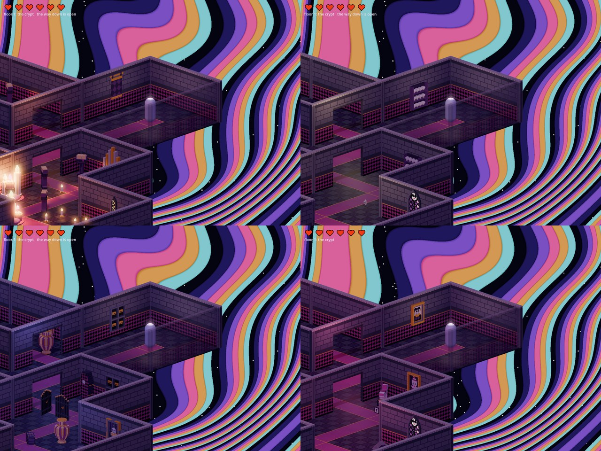
Every piece was drawn by hand and then drafted through the generator too, to compare. The generated lectern, candle creature and ghost-fire skull went in; the rest stayed hand-drawn.
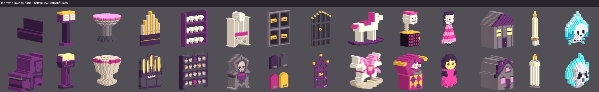
Some masks hang dormant on the walls with the portraits and wake when you come close, peeling off to join the fight. Candle walkers totter after you and drip wax that slows you. A few shots put the flame out, and then they stand as props to be broken. A smaller candle runs faster and trails yellow wax. Ghost-fire skulls weave after you, and one passing a snuffed candle lights it again. After a hit a skull backs off and circles before it dives in again.
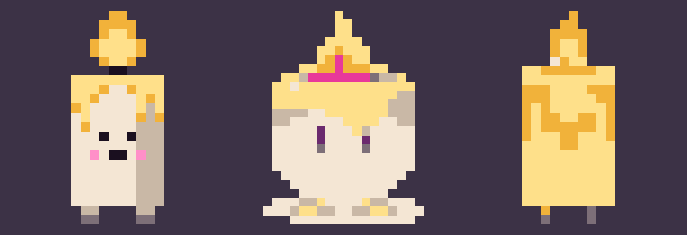
The toy cupboard's dolls are monsters from behind. Each has a toothed maw down her back and three eyes in her hair, and only shots to the back hurt her. She charges in straight lines, runs past if you step aside and turns when she meets a wall. The jack-in-the-boxes sit shut like toys, then spring up as you pass, fire a ring and wind down again. They can only be hurt while they're up.
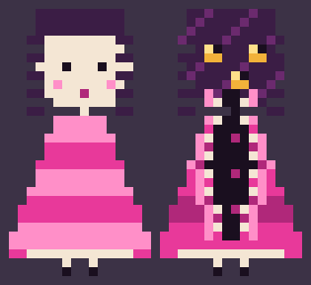
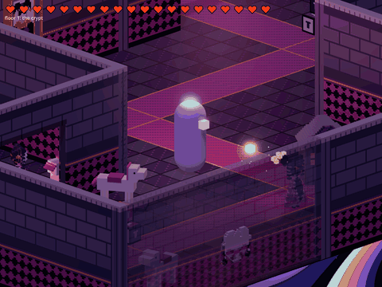
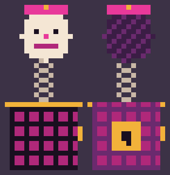
Creatures that have seen you follow you through doorways now, though they only shoot once they're in your room. Getting hit was too vague, with distances measured centre to centre. Now contact counts from the edges of the bodies, and a hit shoves you back, holds the world still for a beat and leaves you blinking, safe for a second or so.
The player is a witch, built from one shared body and parts that swap: hat, hair, top, skirt, stockings and boots, cape, and whatever she holds. Three looks are drawn so far, each from the library. The jester carries a bauble staff under a belled hat. The gothic one wears a wide brim and holds a small wand. The candy one has her hair in buns and waves a star. Any part goes with any other.
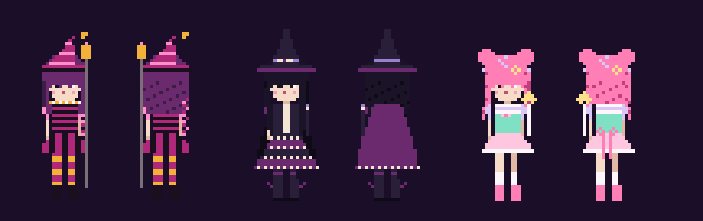
Every part is drawn from the front and from behind. In 3D the front picture bulges forward and the back picture bulges backward, so her hair and cape are there when she walks away from you. Her body is cut at the joints into head, hat, torso, skirt, two arms, a hand and two legs. Nothing is keyframed. Her arms and legs swing against each other at the pace she moves, her hips bob and squash on each step, she leans into turns, and her head and hat trail behind on springs. The first version was bald and stiff, and her shots came out of her middle. Now the wand arm comes up to point when she fires and the shot leaves the tip.
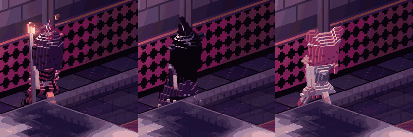
The game now runs in a web page. A browser gets Godot's lighter renderer, and the build doesn't pack the raw pictures, so the sprites are read back out of the imported textures instead. Meshes are built once and kept, so going down a floor doesn't rebuild every candle. In a browser the shadows, the smoothing and the small lights inside props are switched off, and the glow carries the candles on its own. Shadows were the cost: on the lighter renderer, dropping them took it from 30 frames a second to about 105.
Building a floor used to freeze the last frame of the old one. Now a toy-theatre curtain closes over it. A playbill drops in on two cords with the next floor's number and name, and under them the floor's creatures stand in a row on a strip of stage, unnamed. The new floor is built while the bill hangs there, and then the bill flies up and the curtains part. All of it is drawn in code on a coarse pixel grid. Each floor has its own velvet: magenta for the crypt, acid green for the hatchery and candy stripes for the sweet shop.
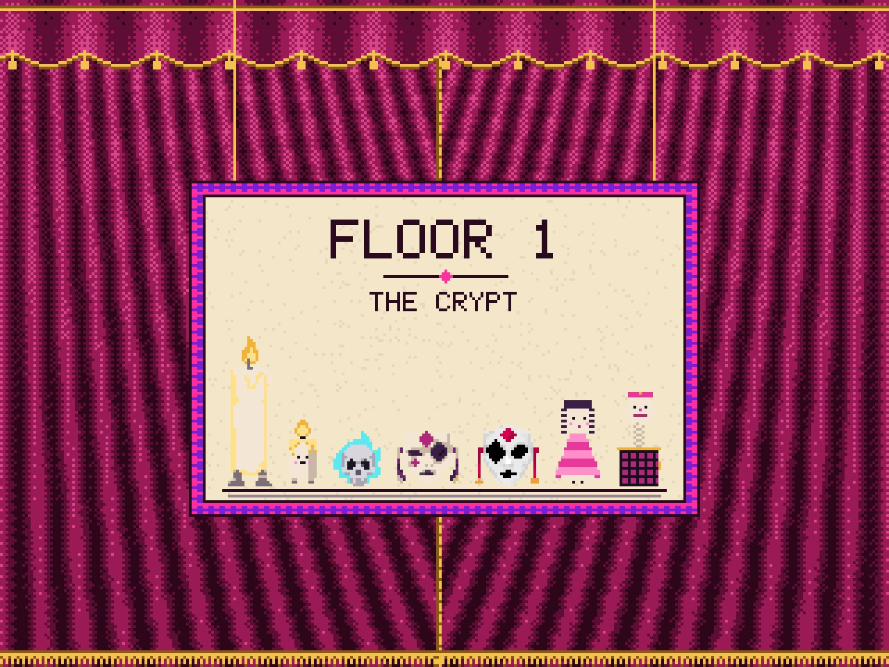
Walls also thin out when a creature is behind them now, the same way they do for the witch, but only in rooms you've already seen. Masks still asleep on the walls, shut boxes and snuffed candles don't count, so they can still pass for furniture.
Every room used to be a tetromino of five-metre cells with props rolled into the corners, which is why the floors felt generated. Underneath the cells there is now a grid four times finer, so walls, doors and floors can be laid a metre and a quarter at a time. The rooms you knew stay as they were. Alongside them come side chapels of one or two cells, halls up to three cells square, narrow corridors that join two rooms end to end, and shallow niches let into outer walls, each holding a single piece.
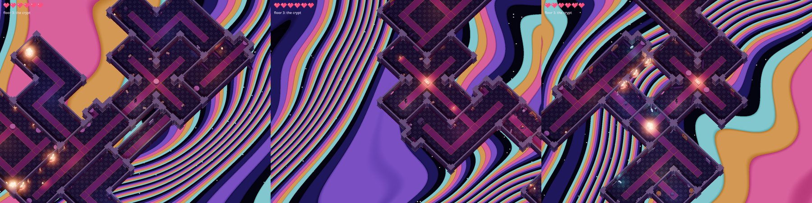
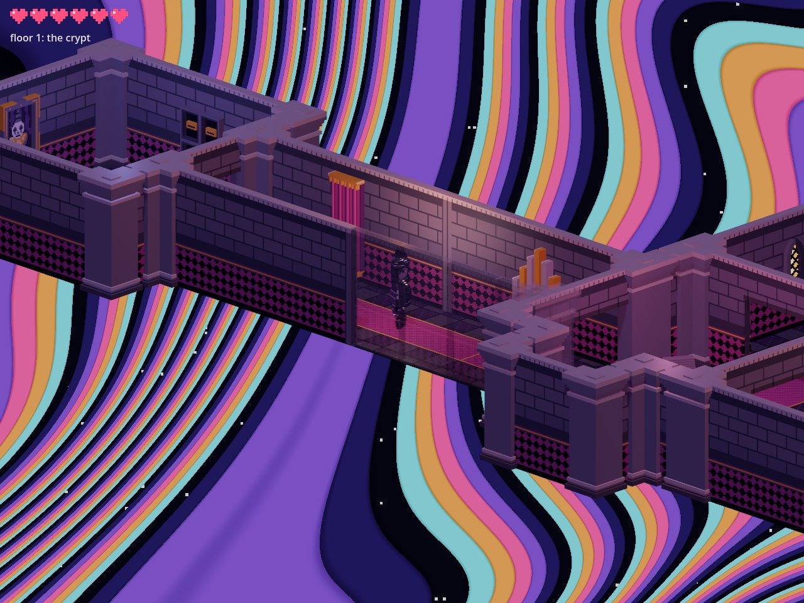
The first room is drawn by hand in a small text file, one character to a square. It's a crossing with four piers round the middle, the same on every floor, with no creatures in it. Under the plan sit a few layouts of slots, each marking a centrepiece, a piece against a wall or a loose piece by a pier. Each run picks a layout and fills it from the floor's own pieces, and slots that mirror each other get the same piece, so the room stays symmetrical while its contents change.
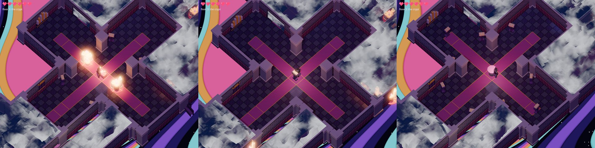
The other rooms are dressed by rules now, the kind a set dresser might keep to. Nothing stands on a runner. A centrepiece closes the view at the end of a dead-end arm, or stands in a crossing. Some doorways get a matching pair, one either side. Each straight run of wall takes a single kind of piece, spaced evenly and mirrored about its middle, and the inner corners hold small clusters. The creatures start on points spread across the open floor, never right inside a doorway.
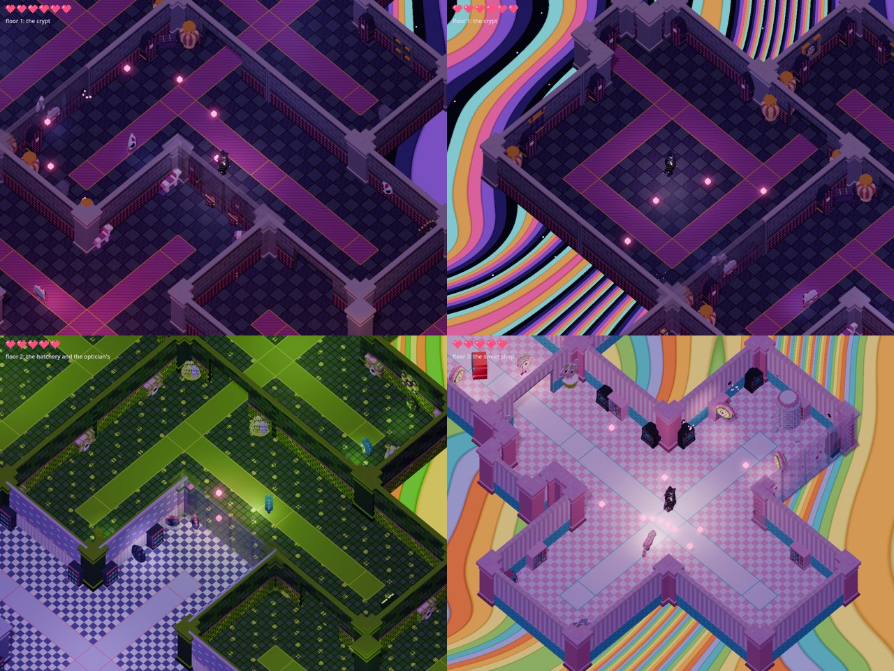
Small rooms were hard to fight in, with nowhere to back off to, so creatures that have seen you now come after you when you leave. They hurry while you're in another room, and they fire through a doorway only once they can see you. The dolls follow too. They used to get stuck in doorways and against furniture. Now creatures placed tight against a wall step out onto open floor, routes go round solid props, and anything that bumps into something steers round it. A doll also now rests a little longer after a charge, and shots to her side count as well as shots to her back. Jack-in-the-boxes keep their ring for when you're close, and from across the room they pop up for one long aimed shot. Your own shots fizzle out in a puff of fog if they fly into a room you haven't reached yet.
The floors run the other way now. You start in the sweet shop, go down through the hatchery and the optician's, and finish in the crypt.
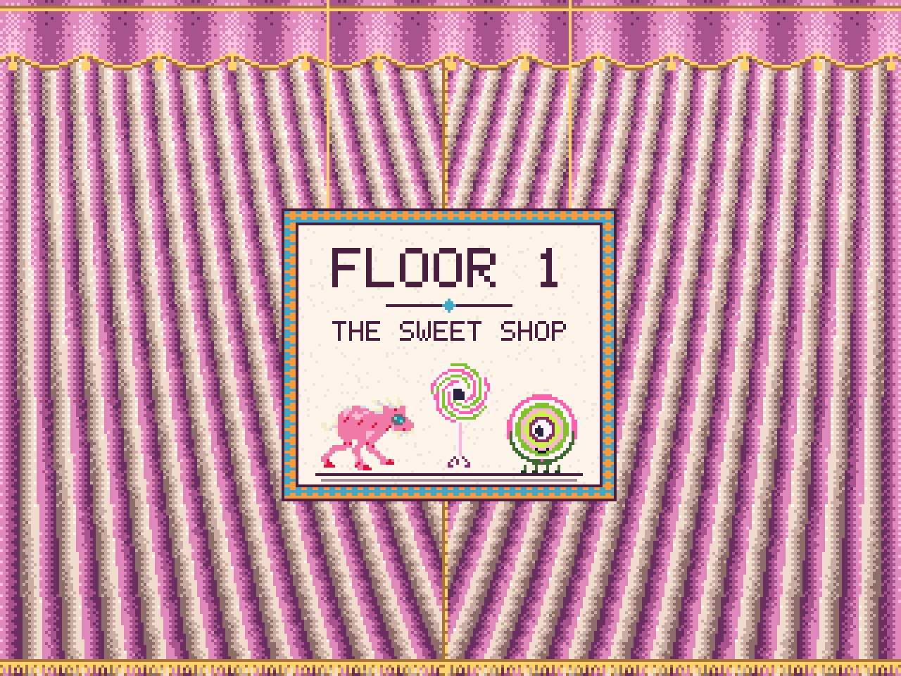
Going over the candy floors piece by piece, twelve of the props were good ideas that didn't read at play size. A nest the same green as its eggs, a trough that was a dark box, a cut-away eye that looked like a disc, a specimen jar whose one eye had been turned into a ring all the way round. Each was drawn again by hand and drafted through the generator, then built in 3D side by side. Ten of the hand versions went in. For the specimen jar and the candyfloss, the generated drafts won.
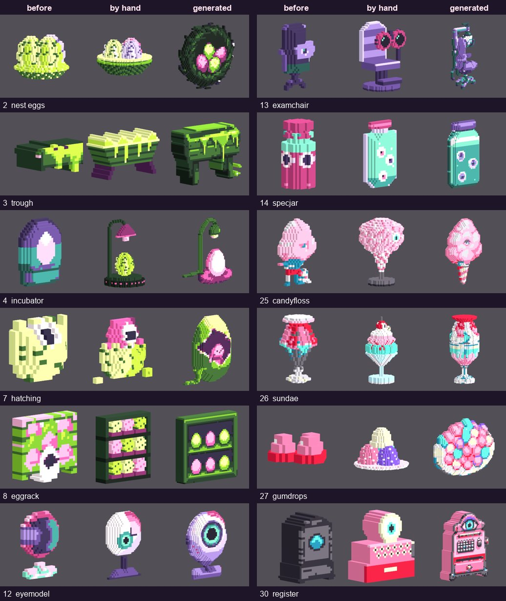
When the last creature on a floor dies, a portal opens in the room where it fell, on clear floor near the spot and never right on top of you. It's a round disc after one of Dani's references: eight ragged dark arms winding in toward a bright four-pointed star, smaller stars twinkling round it, the rim falling off to black, all on a coarse pixel grid. It takes the colours of the floor it leads to, so the sweet shop's portal is green for the hatchery and the crypt's is pink for the sweet shop. Walk into it and the witch is pulled in, spinning and shrinking, and the curtain closes.
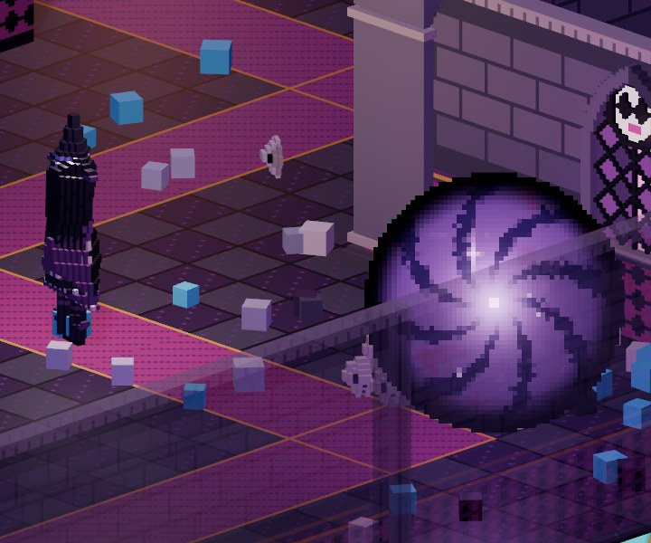
The finer grid had made each floor take fifteen seconds or more to build, long enough for Windows to call the game frozen. Floors, walls and mouldings are now built straight from their visible faces, with touching faces of one colour merged and each theme's patterns worked out once. A floor takes two or three seconds now, and the build hands back a frame every few hundredths of a second, so the curtain keeps moving while it happens. Losing your last heart used to leave the witch standing still forever. Now she topples over and the run starts again from the first floor. The jack-in-the-boxes went from purple and black to red and black.
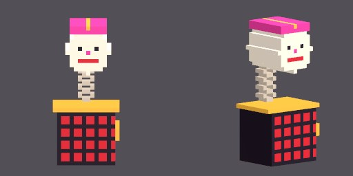
The thing in the witch's hand now decides how she shoots. The jester's bauble staff throws slow, heavy orbs that glance off walls twice. The gothic wand fires fast needles that go through two creatures and into a third. The candy wand throws three stars at once in a fan. A run starts in the first room with three plinths across the crossing, a wand floating over each on a cushion of its own colour. Walk into one and it flies to her hand while the other two go up in smoke. Until then the doorways out are solid fog. There are six floors now, two for each theme, and the second of each pair is half as big again, with more corridors, halls and niches.
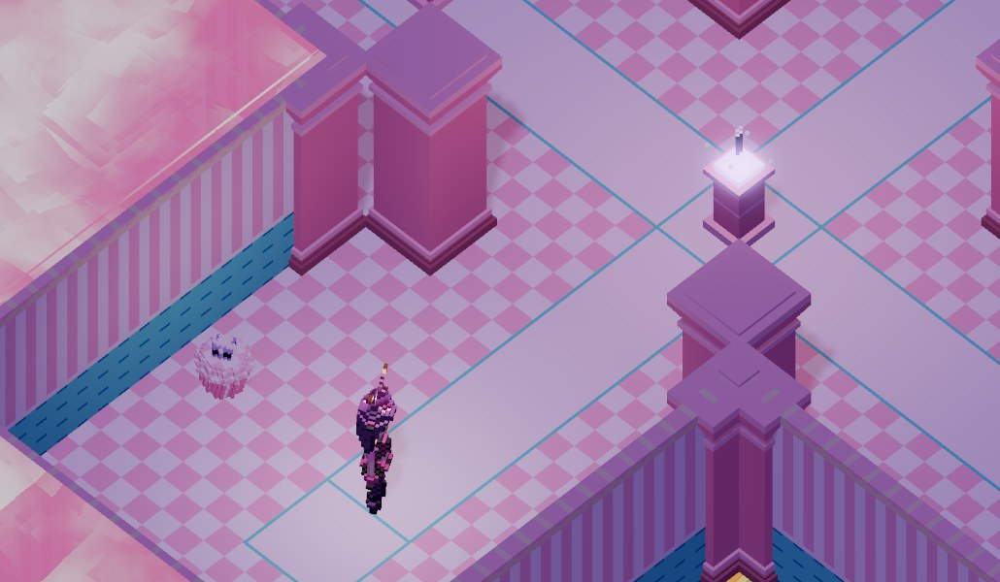
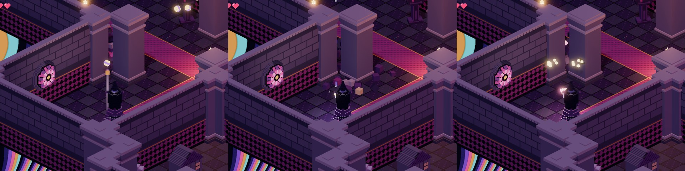
Every style of the witch is a small file now, read by the game on its own: its name, where it sits in the outfit menu, and its wand, down to what the shot looks like. Adding a style means drawing its parts and writing that file. Six themed styles came next, drafted through the generator so Dani could pick a look and then drawn by hand on the shared body, front and back. There are two keepers for the hatchery, one in goggles with an egg staff and one in an eggshell hood with a slime dropper. For the optician's there's a monocle and a lorgnette, and a nurse with a glass-eye wand. The crypt has a mourner in a veil under a crown of candles, and the sweet shop a confectioner in a cupcake hat, armed with a piping bag. Every part mixes with every other, old or new.
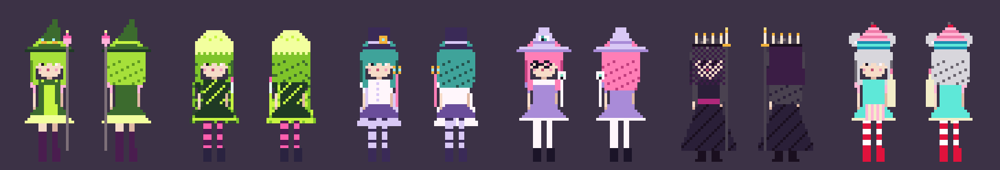
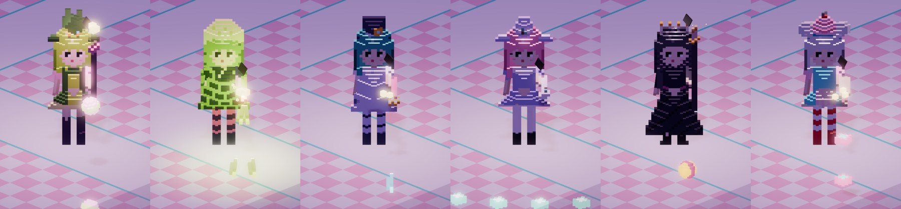
Until now every new prop, outfit and creature was asked for and then picked from what came back. The workbench is a page for making them by hand instead, so each one is chosen and shaped piece by piece. It opens the game's own folder in the browser and lays out what's in it: the props with their recipes, marked kept or in the game, the witch styles, the monsters, and the sprites sorted by theme. Edge and Chrome can save straight back into the folder. Other browsers can read it and download what's made.
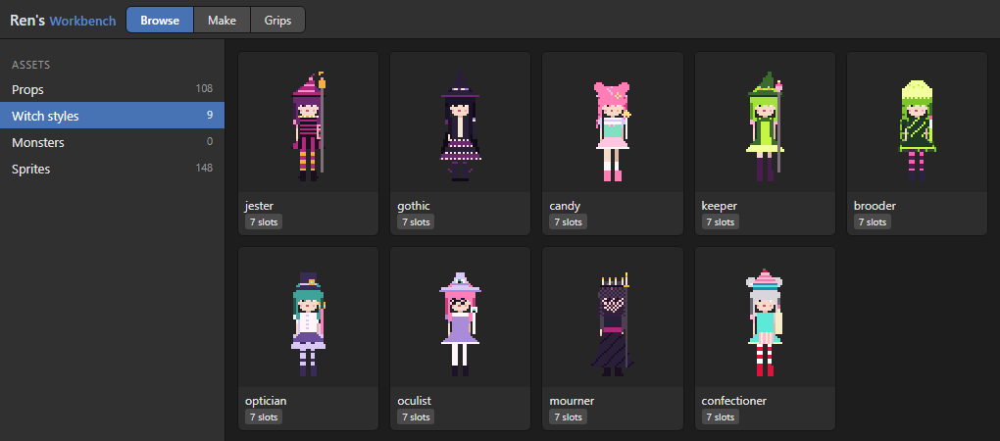
Making something takes four steps: generate a batch, pick the ones worth keeping, edit, finalise. Props come from the same builders the game uses, lathe, slab, relief, body and box net, and the editor is a pixel canvas with a front and a back. Finalising writes the pictures, the recipe and a row in the keep list into the game.
Witches and monsters are built from parts instead of drawn whole. A witch has a slot for each of hat, hair, top, bottom, legs, shoes, cape and what she holds. Every part comes in a few kinds, each with its own sliders: a hat's brim, height and lean, a skirt's layers, length and puff. Any part can be rolled again, locked, or drawn over by hand. A brief such as the optician or the mourner keeps the rolls to a theme's kinds and colours, and a motif like checks or stripes runs through every part. The preview walks and aims on the same rig the game uses, and a finished witch is saved as a style the outfit menu picks up, wand and all.
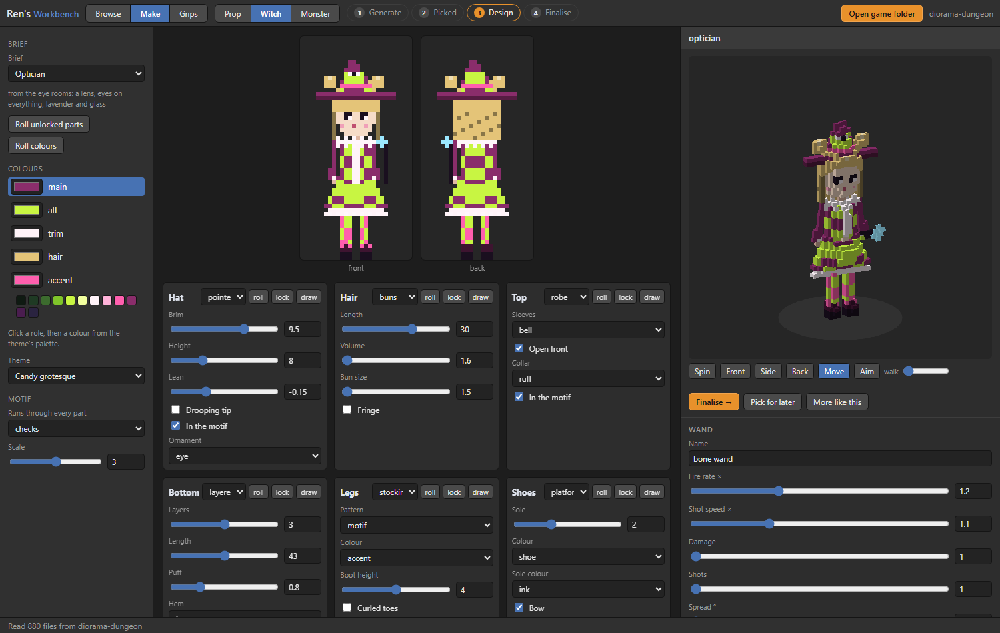
A monster starts from a body plan: floater, blob, biped, gangly, crawler or column. Each plan has its joints and its own way of moving, and the parts hang off the joints: body, head, eyes, mouth, crest, arms, legs, tail and wings. The panel beside the preview sets how it fights, how many hits it takes and which rooms it turns up in. A finished monster is a small file and its pictures in the game's monster folder. The game reads that folder by itself, puts each monster into its rooms and moves it the way the workbench previews it.
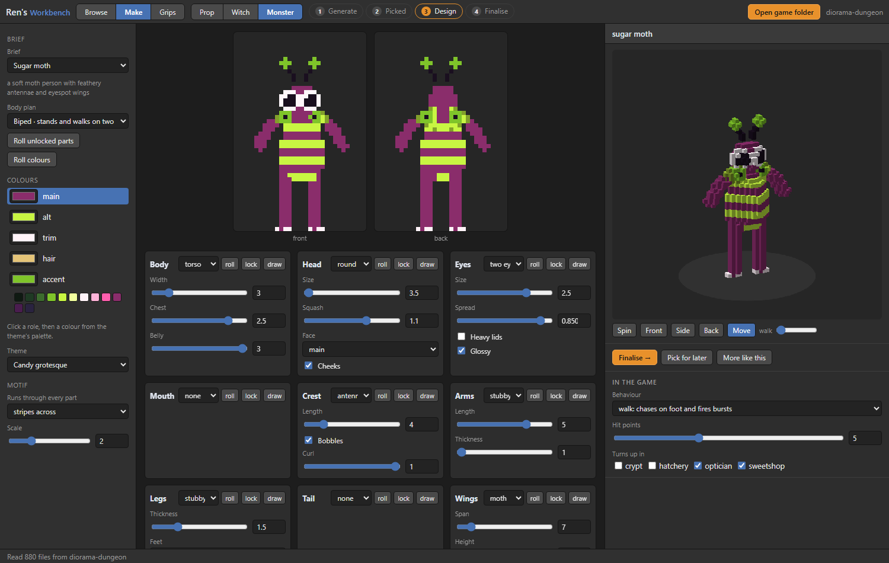
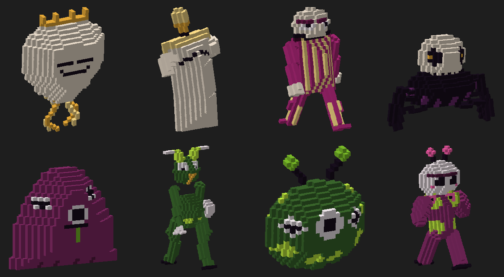
The witch has a shoes slot now, on the ends of her legs and pointing forward. There are ankle boots, Mary Janes, curled points with bells, platforms, clogs and slippers. The styles already in the game keep every part they had and go without until shoes are picked for them.
Where two pieces of her overlap, a sleeve over the bodice or a skirt over the legs, the faces used to flicker against each other. Cutting the overlap out of one piece stopped it, but left an arm hanging loose from her shoulder. Now every piece keeps all of its voxels, and the one that should show is nudged a hair toward the camera.
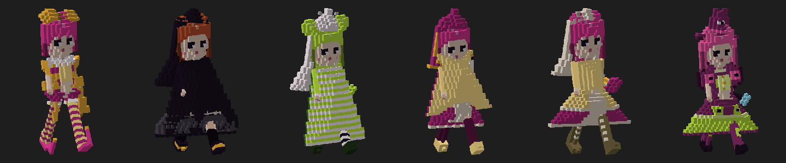
Whatever she held used to be placed by a rule of thumb, set by how long it was, so most things sat in her hand at much the same angle. The Grips page sets it for each item and each outfit: where it sits in her hand, how it's turned while she walks, where it moves to and how it turns when she aims, and the angle of both her arms while she holds it. A lantern can be told to stay level as her arm swings. It all goes into one file that the game reads. The same file also opens in Blender as a row of witches, one per item, with a second row behind them aiming, for posing them there instead.
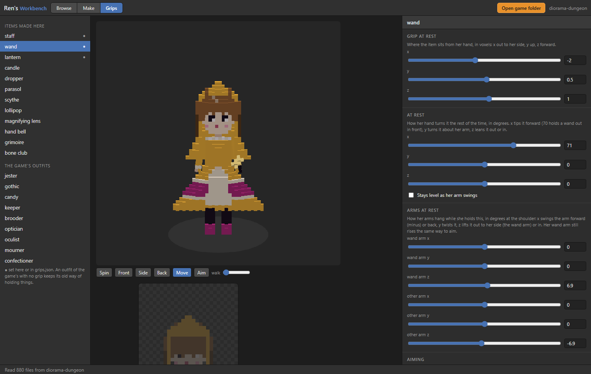
With the grips set, the twelve items made on the Grips page went into the game as weapons of their own, each held the way it was set: staff, wand, lantern, candle, dropper, parasol, scythe, lollipop, magnifying lens, hand bell, grimoire and bone club. The six newer styles got shoes to match their outfits, in their own colours: black laced boots for the mourner, clogs for the keeper, curled points with bells for the brooder. The plinths are gone. Every run now starts the same, in a plain grey dress with a small wand that fires slowly and hits softly, and everything better has to be found.
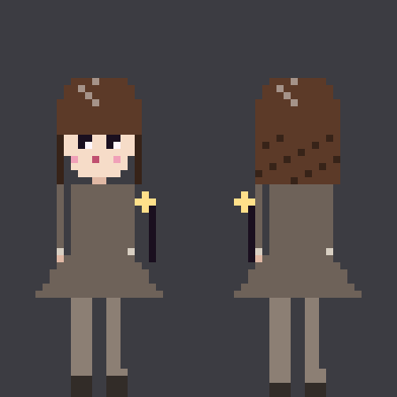
When the last creature on a floor falls, it leaves a weapon or one piece of an outfit a little way from the portal, turning over a ring of light. Walking over it takes it, and what she had there is left on the floor in its place, so she can change her mind. A weapon goes in a second hand, and Tab swaps between it and her own. A piece goes straight on, so by the last floor she's dressed in whatever the run gave her.
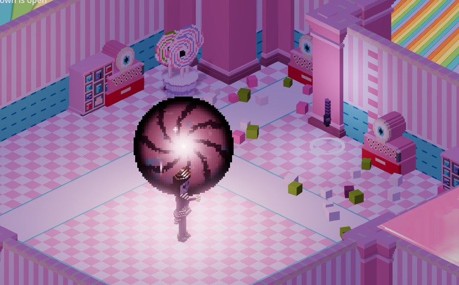
Pieces now change how she fights as well as how she looks. Each outfit has one thing it makes, and where the piece sits decides when. The mourner's are built first. Her crown of candles sends flames circling round her that burn whatever they touch. Her shoes leave wax footprints that slow creatures down. A creature she kills leaves a lit candle where it fell. Getting hit in her bodice puts out a puff of candle smoke that hides her for a second, and rolling in her skirt leaves a ring of flames behind. Three of her pieces make it all burn longer; all five, and her shots light candles where they land.
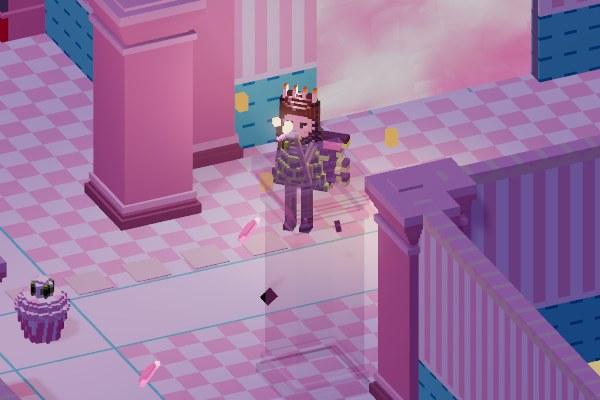
What can drop is unlocked over many runs, the way The Binding of Isaac does it. Clearing a floor for the first time puts a new outfit into the dungeon. Clearing one without being hit, getting to the crypt, or falling enough times each add a new weapon. A line at the top of the screen says what's new and nothing says why.
The pieces that follow her bring familiars, the workbench's little relief creatures, eight pixels wide and twelve high. Fifty-four were rolled, six for each outfit, each set of six drawn in the colours of its outfit. The brooder's cape is the first to bring one along: a slimeling that trails after her and spits slime under the nearest creature.
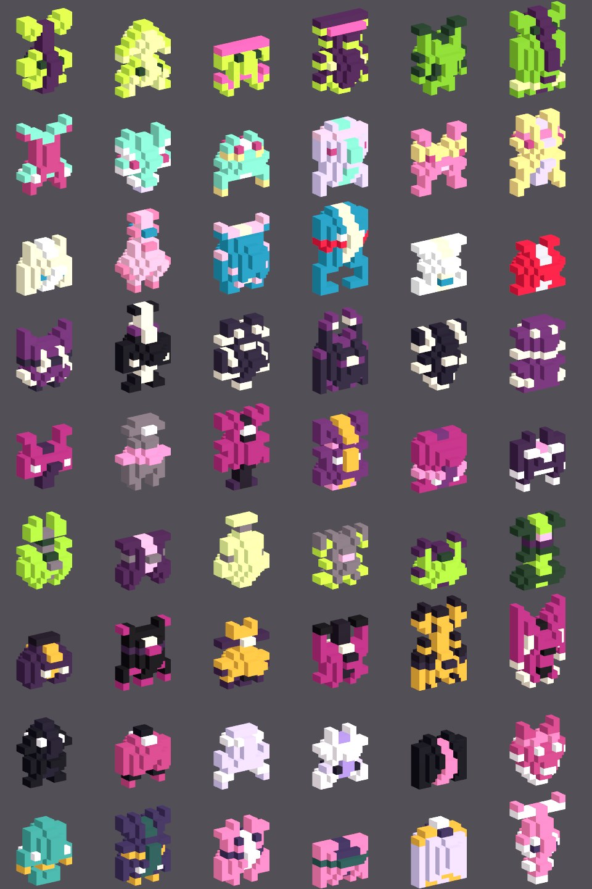
The dodge roll used to tip her whole body over at her feet, so her head went through the floor, and her arms and legs only bent a little. Now she tucks in, turns head over heels about the middle of the tuck with a small hop, and comes out of it standing. She rolls the way she's moving, wherever she was aiming. Across a run of rolls her lowest point never went below the floor.
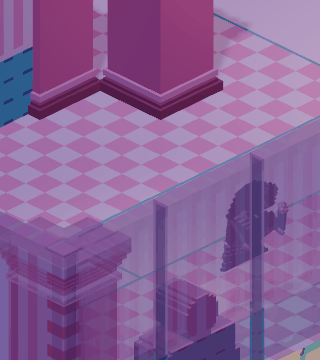